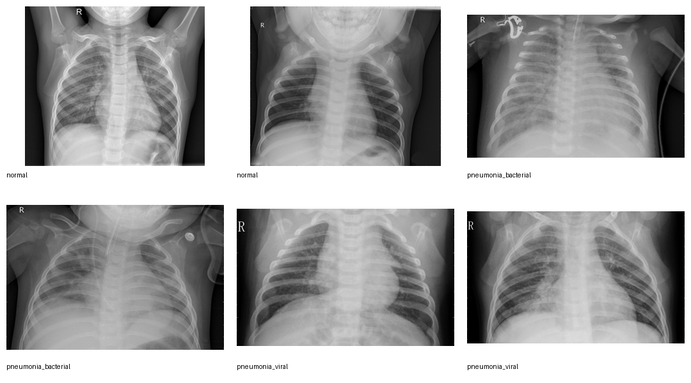
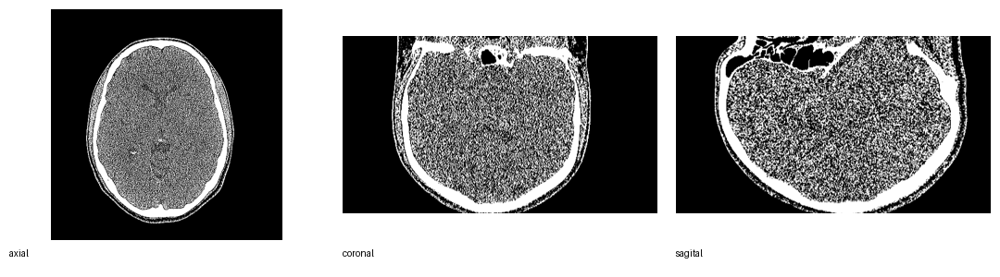
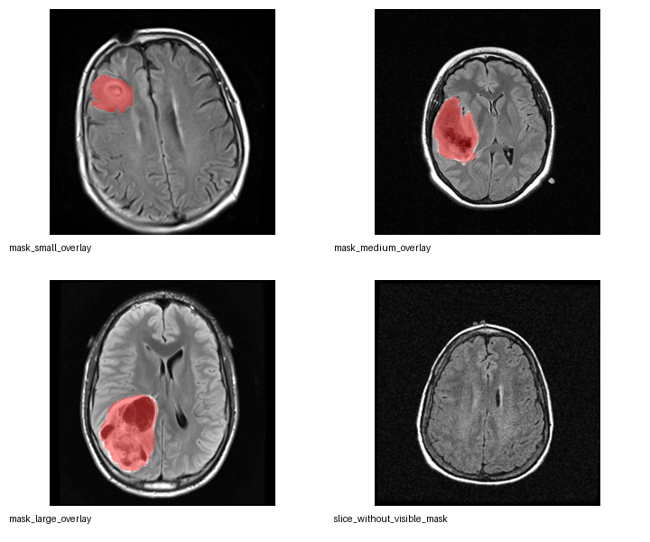
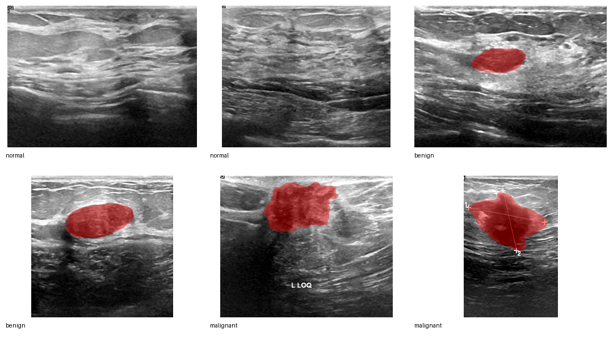
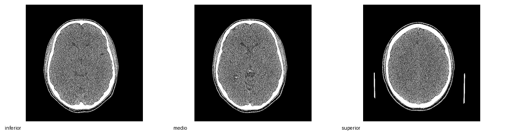
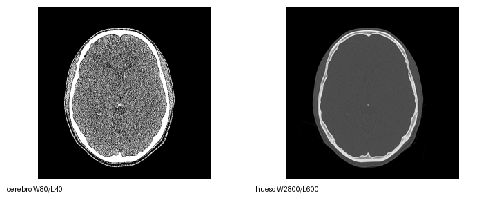

Imágenes médicas: ver el cuerpo como dato
XII Seminario de Automática, Universidad del Cauca, 2026
Propósito de la sesión
Entender imágenes médicas sin convertirnos en radiólogos
Al terminar podremos responder:
- ¿Por qué una imagen médica no es una fotografía común?
- ¿Qué miden RX, CT, MRI y ultrasonido?
- ¿Qué significan píxel, vóxel, contraste, ruido y máscara?
- ¿Por qué el contexto clínico sigue siendo indispensable?
Enfatizar desde el principio que la clase es divulgativa. No se hará diagnóstico ni entrenamiento clínico.
Acuerdo de seguridad
Esta clase usa imágenes reales, pero con fin educativo.
- No se diagnostica a partir de estas diapositivas.
- No se comparan pacientes reales.
- No se concluye gravedad clínica.
- No se reemplaza criterio médico.
- Las máscaras se usan para explicar segmentación, no para enseñar oncología.
Una imagen médica es una medición visualizable; su interpretación clínica requiere historia, examen físico, protocolo de adquisición y experiencia profesional.
La idea central
El cuerpo no “aparece” en la imagen.
El cuerpo produce una señal que el equipo transforma.
El dataset docente
Usaremos cuatro grupos de imágenes reales ya preparadas para enseñanza:


El dataset docente


Las imágenes vienen de datasets Kaggle y fueron convertidas a PNG para fines educativos. No se usan para diagnóstico clínico.
Si alguna imagen no aparece, verificar que el script se haya ejecutado y que la carpeta teaching_dataset/ esté junto al archivo .qmd.
¿Qué contiene cada grupo?
| Grupo | Modalidad | Qué permite explicar | Archivo/mosaico clave |
|---|---|---|---|
| RX | Radiografía de tórax | Absorción, superposición, contraste | xray_overview.png |
| CT | Tomografía craneal | Cortes, vóxeles, ventana/nivel, DICOM | ct_planes.png |
| MRI | Resonancia FLAIR | Contraste de tejidos, máscara, segmentación | mri_overview.png |
| US | Ultrasonido mamario | Ecos, textura, speckle, segmentación | ultrasound_overview.png |
La tabla no debe convertirse en una explicación técnica larga. Sirve para que el público ubique qué verá durante la clase.
Parte 1 — Una imagen médica es una señal convertida en imagen
Cuatro formas de mirar el cuerpo
La misma anatomía puede verse diferente porque la señal medida es diferente.
Pregunta para el público
Cuando una zona se ve blanca, ¿significa siempre lo mismo?
Respuesta corta:
No.
El brillo depende de la modalidad, del protocolo, del procesamiento y de la forma de visualizar la imagen.
Pedir respuestas antes de avanzar. Lo normal es que el público piense “blanco = hueso” por experiencia con RX. Esa intuición no se transfiere directamente a MRI o ultrasonido.
De la señal al píxel
Una imagen digital está hecha de píxeles.
Cada píxel contiene un número.
Ver una imagen médica es ver números convertidos en grises.
Píxel y vóxel
Píxel
Elemento pequeño de una imagen 2D.
Vóxel
Elemento pequeño de un volumen 3D.
Corte
Plano extraído de un volumen.
Volumen
Conjunto ordenado de cortes.
Aprovechar los planos CT para explicar que el cuerpo se puede representar como un bloque de pequeños cubos; un corte es una lámina dentro del bloque.
Parte 2 — Radiografía: una sombra útil
Radiografía: primera observación
Preguntas guía:
- ¿Qué zonas parecen más oscuras?
- ¿Qué estructuras parecen más claras?
- ¿Qué se superpone?
- ¿Qué no podríamos afirmar sin contexto clínico?
No diagnosticar. Observar solo propiedades visuales.
Radiografía: la lógica física
- Aire: menor atenuación.
- Hueso: mayor atenuación.
- Tejidos blandos: atenuación intermedia.
Radiografía: lo que se gana y lo que se pierde
Ventajas
- Rápida.
- Económica.
- Útil para tórax y hueso.
- Fácil de transportar y almacenar.
Limitaciones
- Proyecta 3D en 2D.
- Superpone estructuras.
- Usa radiación ionizante.
- El hallazgo visual necesita contexto.
Explicar “proyección” con una sombra de la mano: muchas profundidades caen en una sola imagen.
Actividad breve: lectura sin diagnóstico
En parejas, observen el mosaico RX durante 2 minutos.
Completen verbalmente:
- Una característica de contraste.
- Una estructura que se superpone.
- Una cosa que no se debería concluir solo con la imagen.
La meta es describir, no diagnosticar.
Parte 3 — CT: de muchas sombras a cortes
CT: cortes desde una serie DICOM

La CT también usa rayos X, pero no entrega una sola sombra.
El equipo mide desde muchos ángulos y el computador reconstruye cortes.
Esto permite mirar el cuerpo por secciones.
CT: reconstrucción conceptual
CT: axial, coronal y sagital
Tres formas de cortar el mismo volumen: axial, coronal y sagital.
Usar el cuerpo propio como referencia: axial como rebanadas de arriba hacia abajo, coronal como de frente a espalda, sagital como izquierda-derecha.
CT: la ventana cambia lo que vemos

La CT conserva números asociados a atenuación.
Pero la pantalla no puede mostrar todos los matices a la vez.
Por eso se elige una ventana:
- una para cerebro;
- otra para hueso;
- otra para pulmón;
- otra para abdomen.
Cambiar la ventana cambia la visualización, no el cuerpo ni el dato original.
Actividad: misma imagen, otra pregunta
Miren el mosaico de ventana CT.
Discusión:
- ¿Qué imagen permite ver mejor estructuras óseas?
- ¿Qué imagen permite ver mejor tejidos blandos?
- ¿Por qué sería un error decir que una de las dos es “más real”?
Parte 4 — MRI: una imagen sensible al tejido
MRI: observar tejidos blandos
La resonancia magnética no usa rayos X.
Mide señales relacionadas con protones de hidrógeno y su comportamiento en un campo magnético.
En esta clase usamos imágenes FLAIR del dataset docente.
FLAIR no se explica con física avanzada. Basta decir: es una forma de adquirir MRI que puede resaltar ciertos cambios en tejido cerebral al suprimir parte de la señal del líquido.
MRI: no existe una única “foto”
En MRI, el contraste depende de cómo se adquiere la señal.
La misma región puede cambiar de apariencia según la secuencia.
T1 T2 FLAIR Difusión Contraste
Para público general:
La MRI no pregunta solo “¿qué forma tiene?”, sino también “¿cómo se comporta este tejido bajo esta medición?”.
MRI y segmentación
El dataset docente incluye:
- imagen MRI;
- máscara manual;
- overlay pedagógico.
La máscara indica una región marcada para análisis.
No es una etiqueta que deba interpretarse sin contexto clínico.
¿Qué es una máscara?
Segmentar es separar una región de interés del resto de la imagen.
Parte 5 — Ultrasonido: imágenes hechas con ecos
Ultrasonido: textura y ecos
El ultrasonido envía ondas sonoras de alta frecuencia.
El equipo escucha ecos producidos por cambios entre tejidos.
Por eso su apariencia suele ser granular y dependiente del operador, del ángulo y del tejido.
Ultrasonido: idea física
Speckle: textura, no “suciedad”
El ultrasonido suele tener una textura granular llamada speckle.
Puede parecer ruido, pero está relacionada con la forma en que muchas pequeñas reflexiones se combinan.
Pregunta:
¿Qué parte parece estructura y qué parte parece textura?
Ultrasonido y máscaras
El dataset docente incluye imágenes normales, benignas y malignas según la estructura original del dataset.
Para enseñanza, las máscaras se usan para explicar:
- región de interés;
- contorno;
- área;
- superposición imagen–máscara;
- análisis computacional posterior.
No usamos estas imágenes para entrenar diagnóstico clínico en esta clase.
Parte 6 — Calidad de imagen
La pregunta correcta no es “¿se ve bonito?”
La pregunta correcta es:
¿sirve para responder una pregunta médica concreta?
Una imagen puede verse limpia y aun así no ser suficiente.
También puede verse ruidosa, pero contener información útil para un experto.
Cuatro conceptos de calidad
Contraste
Diferencia visible entre regiones.
Resolución
Capacidad de separar detalles pequeños.
Ruido
Variación no deseada o aleatoria.
Artefacto
Apariencia causada por el sistema, no por el cuerpo.
Contraste
El contraste no es solo una propiedad del cuerpo.
También depende de:
- modalidad;
- adquisición;
- ventana de visualización;
- procesamiento;
- tejido de interés.
Resolución
Resolución significa capacidad para distinguir detalle.
En una imagen digital depende de:
- tamaño de píxel o vóxel;
- resolución física del sistema;
- movimiento;
- reconstrucción;
- visualización.
Ruido y artefactos
En imágenes médicas hay patrones que no siempre vienen directamente de una estructura anatómica.
Ejemplos:
- ruido;
- speckle;
- movimiento;
- mala ventana;
- aliasing;
- reconstrucción imperfecta.
Del original al derivado docente
El dataset de enseñanza conserva los datos originales separados de los derivados.
Regla: los datos originales no se modifican.
Parte 7 — Procesamiento e inteligencia artificial
¿Dónde entra el procesamiento de imágenes?
Ejemplos simples:
- ajustar contraste;
- reducir ruido;
- segmentar una región;
- medir área;
- comparar casos.
Imagen + máscara = medición
Una máscara permite pasar de “ver” a “medir”.
Podemos calcular:
- área;
- forma;
- textura;
- volumen;
- cambio temporal.
Pero medir no equivale automáticamente a diagnosticar.
IA médica: no ve como una persona
Un modelo no ve anatomía.
Procesa arreglos de números.
¿Qué puede salir mal con IA?
- Entrenar con imágenes de un solo hospital.
- Confundir marcas, bordes o artefactos con enfermedad.
- Usar etiquetas incompletas.
- Evaluar sin población externa.
- Ignorar protocolo de adquisición.
- Mostrar resultados sin incertidumbre.
La IA puede ayudar, pero no elimina la necesidad de criterio, validación y responsabilidad.
Cierre
Actividad final: mapa de modalidad
En grupos, elijan una imagen del dataset docente y respondan:
| Pregunta | Respuesta esperada |
|---|---|
| ¿Qué modalidad parece ser? | RX, CT, MRI o US |
| ¿Qué fenómeno físico se mide? | Atenuación, ecos, señal magnética… |
| ¿Qué representa el brillo? | Depende de la modalidad |
| ¿Qué limitación visual tiene? | Ruido, superposición, ventana, máscara… |
| ¿Qué NO se puede concluir solo con la imagen? | Diagnóstico, gravedad, evolución… |
Tres ideas que deben quedar
1. Una imagen médica es una medición transformada.
2. El brillo no significa lo mismo en todas las modalidades.
3. La imagen necesita contexto clínico y técnico.
Checklist de comprensión
Al final, cada persona debería poder explicar:
Fuentes conceptuales y datos
Base conceptual
- Prince, J. L. & Links, J. M. Medical Imaging: Signals and Systems, 2nd ed.
- Dougherty, G. Digital Image Processing for Medical Applications.
Datasets Kaggle usados para el dataset docente
- Chest X-Ray Images (Pneumonia): https://www.kaggle.com/datasets/paultimothymooney/chest-xray-pneumonia
- Cranial CT: https://www.kaggle.com/datasets/abbymorgan/cranial-ct
- Brain MRI segmentation: https://www.kaggle.com/datasets/mateuszbuda/lgg-mri-segmentation
- Breast Ultrasound Images Dataset: https://www.kaggle.com/datasets/aryashah2k/breast-ultrasound-images-dataset